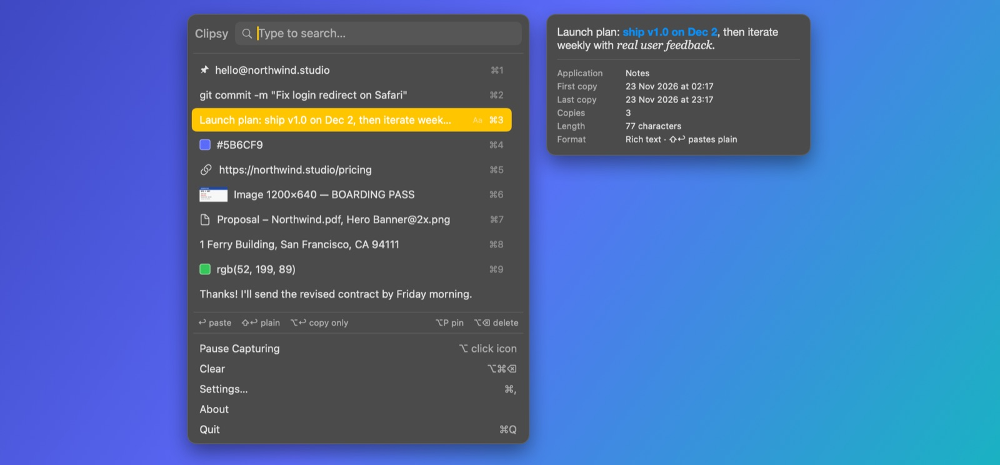
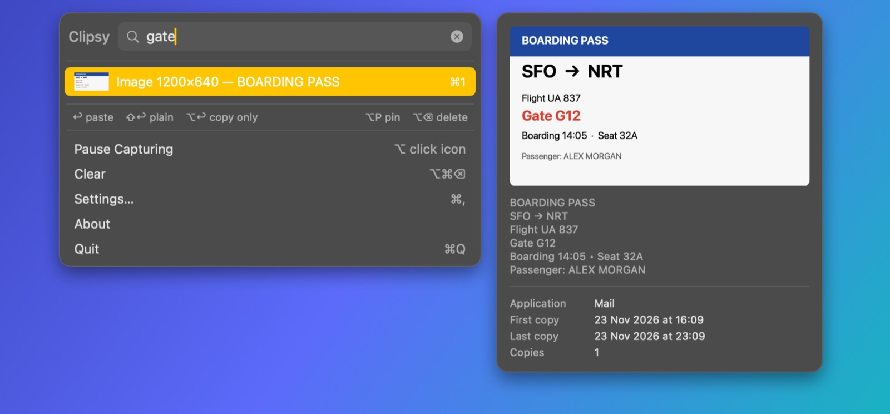

Clipsy is a fast, private clipboard history for your Mac. Press ⇧⌘C, type a few letters, hit Return.
Get helpPrivacy policy
Clipsy lives in your menu bar and stays out of your way.
Open with your own shortcut, search as you type, paste with Return or ⌘1–9.
Text in copied images is recognized on your Mac, so you can find a screenshot by what it says.
Bold, colors and fonts survive. Hold ⇧ to paste plain text instead.
Color swatches, links, files and images, each with a full preview.
Pinned clips stay at the top and are never removed.
No accounts, no analytics, no network. Password manager copies are skipped.
Copied a boarding pass, a receipt or a slide? Type any word on it and Clipsy finds the image. Recognition runs entirely on your Mac.

Need help or have an idea? Open a support request and we'll get back to you.
| ⇧⌘C | Open your history (change it in Settings) |
| ↑ ↓ · Return | Choose a clip and paste it |
| ⌘1 – ⌘9 | Paste one of the first nine clips |
| ⇧Return | Paste as plain text |
| ⌥Return | Copy only, without pasting |
| ⌥P · ⌥⌫ | Pin or delete the selected clip |
| ⌥⌘⌫ | Clear everything except pinned clips |
| ⌥ click icon | Pause or resume capturing |
Automatic pasting needs Accessibility permission. Open System Settings → Privacy & Security → Accessibility and turn on Clipsy. You can also turn automatic pasting off in Clipsy's Settings and paste with ⌘V yourself.
Only on your Mac, inside Clipsy's private app container. Nothing is uploaded. Deleting the app removes it.
No. Copies that password managers mark as sensitive are skipped automatically. You can also exclude any app in Settings → Ignore copies from.
Hold ⌥ and click the menu bar icon, or choose Pause Capturing in the Clipsy window. Do the same to resume.
Another app may use the same shortcut. Open Clipsy's Settings, click the shortcut and press a new one.